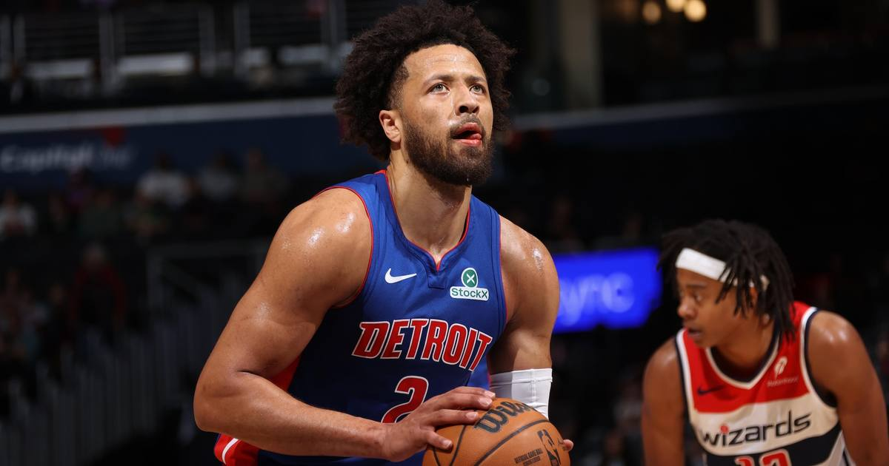

Cade Cunningham drops 52 with 11 assists and zero turnovers — the first 50-10-0 game in NBA history
Cade Cunningham scored a career-high 52 points with 11 assists and no turnovers in Detroit's 144-140 double-overtime win over Washington — the first 50-point, 10-assist, zero-turnover game since the league started tracking turnovers in 1977-78.

Disclosure: this post contains affiliate links. I earn a commission on qualifying purchases.
The night
The Detroit Pistons needed every bit of it. Cade Cunningham scored a career-high 52 points with 11 assists and no turnovers — zero, in 48 minutes — as Detroit outlasted the Washington Wizards 144-140 in double overtime at Capital One Arena on Thursday night.
He did the damage late. Thirty of the 52 came in the fourth quarter and the two overtimes, including 18 in the fourth alone. His 47th point, a three in the first overtime, tied the game at 130. He opened the second overtime with another three that put Detroit ahead for good, then buried a midrange dagger with 25.3 seconds left to make it 142-138. For the night he shot 16-for-25 from the field and 17-for-18 from the line, adding five rebounds, a steal and a block.
The Wizards kept answering. Trae Young hit a deep three at the fourth-quarter buzzer to force the first extra session, then was held to four points on 0-for-7 shooting across both overtimes. Rookie AJ Dybantsa — bloodied in a collision with Cunningham late in regulation, jaw to face — stayed in the game and sent it to a second overtime with a free-throw-line jumper with 0.1 seconds left. Washington still lost, despite 37 points and 14 assists from Young, 30 points and 15 rebounds from Anthony Davis, and 30 from Alex Sarr on 12-of-14 shooting.
Detroit got help. Ausar Thompson posted his first career triple-double — 17 points, 11 assists, 11 rebounds, four steals and three blocks — and Daniss Jenkins scored 21 for the third straight game since moving into the starting lineup. The Pistons improved to 8-3 and swept the home-and-home with Washington.
The history
According to OptaSTATS, no NBA player had ever done this before — at least not since the league started tracking turnovers in 1977-78. Plenty of stars have put up 50 and 10. Every single one of them gave the ball away at least once. Cunningham is the first to do it clean.
It is also a first inside his own franchise: no Piston had ever combined 50 points and 10 assists in a single game. And the scoring total itself is historic in Detroit — the 10th 50-point game in Pistons history, tied for the fourth-highest total ever by a Piston, behind Jerry Stackhouse's 57 in 2001, Kelly Tripucka's 56 in 1983 and Dave Bing's 54 in 1971. George Yardley also scored 52, in 1958.
The previous career high was 46 — also against the Wizards, almost exactly a year ago, on November 10, 2025. Washington has now been on the wrong end of both of his biggest nights. "It was the best I've ever done it in my NBA career for sure," Cunningham said afterward.
What's next
The Pistons are 8-3, and the 24-year-old who runs the whole thing just put up a line no one in the turnover era has ever produced. The next milestone on the board is simpler: keep winning, and let the MVP conversation come to him.
Watch
Source: Cade Cunningham 52 points l Pistons at Wizards l 11.12.26 #NBA — Detroit Pistons. The official Pistons cut of every bucket from the 52-point night, including the late threes and the second-overtime dagger.
Gear up: Fanatics